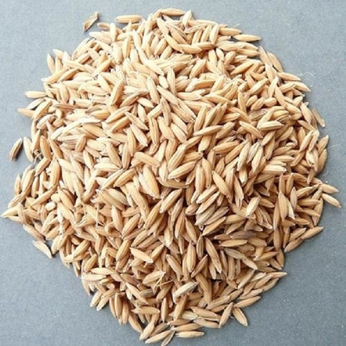
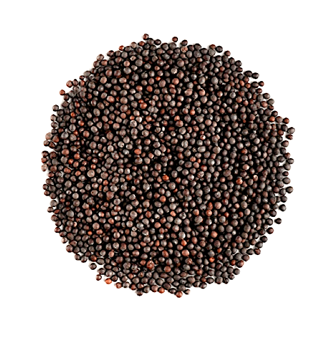

Paddy
Rice begins as a small seed and a careful plan. This demo profile introduces the crop in plain language and leaves the detail for a grower-led conversation.
Enquire about paddyPortfolio demo · Fictional seed house
GreenField Seeds is a thoughtful demo storefront for three familiar crops: paddy, mustard, and black sesame. The aim is simple: make agricultural ideas feel warm, clear, and easy to explore.
01 · The seed shelf
These profiles are starting points for a conversation, not sales claims. No prices, yields, certifications, or stock details are invented here.

Rice begins as a small seed and a careful plan. This demo profile introduces the crop in plain language and leaves the detail for a grower-led conversation.
Enquire about paddy
Mustard brings colour to the field and clarity to the catalogue. The demo text focuses on crop character rather than performance claims.
Enquire about mustardSmall seeds can still carry a strong visual story. This profile keeps the language simple and leaves agronomic specifics out of the demonstration.
Enquire about black sesame02 · Our story
GreenField Seeds is a fictional brand, built as a responsive portfolio demo. The crops are real; the shop, story, and contact details are not.
The concept imagines a small seed house that values plain language, calm design, and honest limitations. It avoids the usual trap of inventing farm history, grower quotes, or agronomic promises just to fill space.
Descriptions explain the basics without invented yields, prices, or certifications.
Supplied images are clearly identified as placeholder photography for this demo.
Readable HTML and CSS keep the demo approachable for beginners.
03 · Contact
Have a question about the concept or one of the crop profiles? Send a note to the demo inbox. The email link works, but the address is intentionally a placeholder.
Demo address: messages sent to this inbox will not be received.